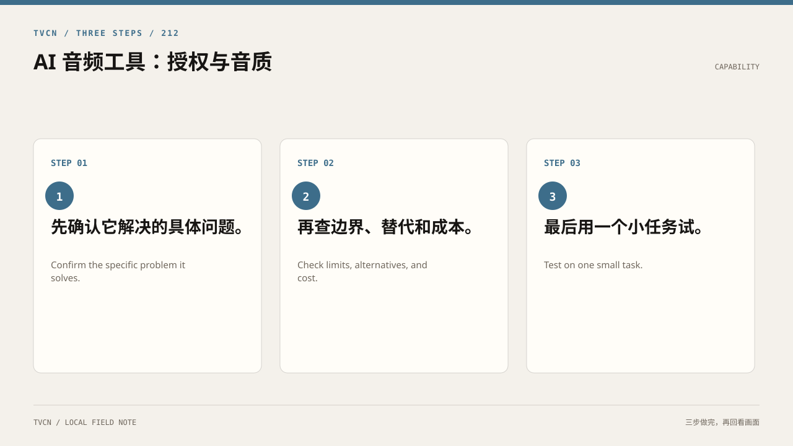

选型先看什么
- 授权：商用许可、声音克隆范围和输出归属；不要只看“可商用”三个字，读完整条款。
- 音质：试中文、英文、数字、人名和情绪句；只听 demo 不够，要用自己的稿子。
- 可控性：能否导入自己的录音、控制停顿和重音；不能控的生成声，进不了对白剪辑。
什么时候不要用
新闻、纪录片、证词和真实人物代言，不要用克隆声音替代原声。没有授权的声音，不进交付。
现场
让工具读一段 30 秒台词，听齿音、断句和尾音；再查商用授权和克隆范围。
DIAGRAM / Capability card
三步流程

怎么做
- 让工具读一段 30 秒台词。
- 听齿音、断句和尾音。
- 再查商用授权和克隆范围。
别踩
别只听音色像不像；授权只限个人使用，商用一样不能用。
图片说明：本页封面、图解与步骤图是编辑示意或结构图，不是本页实测照片，也不能当作器材测试证据；AI 辅助生成的图会在图注标出。判断器材或画面，以正文的测试条件与现场记录为准。